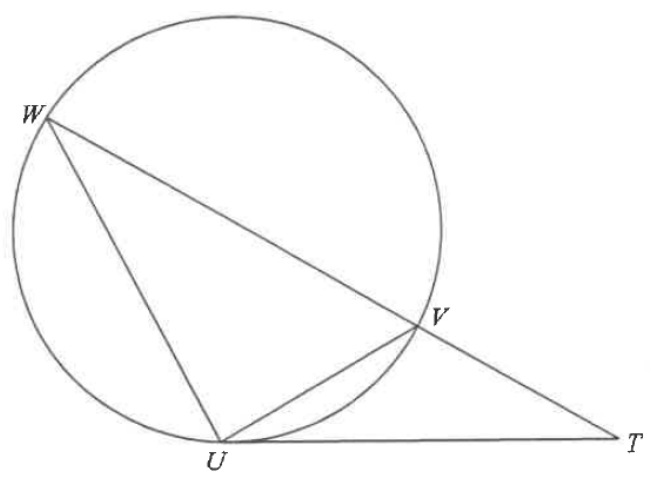

Circle geometry — tangent, alternate segment theorem, similar triangles, diameter & Pythagoras
In Figure 2, $U$, $V$ and $W$ are points lying on a circle. Denote the circle by $C$. $TU$ is the tangent to $C$ at $U$ such that $TVW$ is a straight line.
(a) Prove that $\triangle UTV \sim \triangle WTU$. [2 marks]
(b) It is given that $VW$ is a diameter of $C$. Suppose that $TU = 780\text{ cm}$ and $TV = 325\text{ cm}$.
(i) Express the circumference of $C$ in terms of $\pi$.
(ii) Someone claims that the perimeter of $\triangle UVW$ exceeds $35\text{ m}$. Do you agree? Explain your answer. [5 marks]

Since $TU$ is a tangent to $C$ at $U$, the angle between the tangent $TU$ and the chord $UV$ equals the angle in the alternate segment:
$$\angle TUV = \angle TWU \quad (\angle \text{ in alt. segment})$$
Also the two triangles share the angle at $T$:
$$\angle UTV = \angle UTW \quad (\text{common angle})$$
The third angles of the two triangles are then equal (angle sum of a triangle):
$$\angle TVU = \angle TUW$$
Hence
$$\boxed{\triangle UTV \sim \triangle WTU} \quad (\text{AAA})$$
From the similarity in (a), corresponding sides are proportional:
$$\frac{TW}{TU} = \frac{TU}{TV} \quad (\text{by (a)})$$
Since $TVW$ is a straight line, $TW = TV + VW = 325 + VW$. Substituting the given lengths:
$$\frac{325 + VW}{780} = \frac{780}{325}$$
$$325(325 + VW) = 780^2$$
$$325\,VW = 608400 - 105625 = 502775$$
$$VW = 1547\text{ cm}$$
Since $VW$ is a diameter of $C$, the radius is $\frac{1547}{2}\text{ cm}$, so
$$\text{circumference} = 1547\pi\text{ cm}$$
From the similarity in (a), matching the sides that correspond:
$$UV : UW = TV : TU = 325 : 780 = 5 : 12$$
Since $VW$ is a diameter of $C$, the angle in the semicircle is a right angle:
$$\angle VUW = 90^\circ$$
So $\triangle UVW$ is right-angled at $U$ with legs in the ratio $5:12$, and by Pythagoras the hypotenuse is:
$$UV : UW : VW = 5 : 12 : 13$$
Since $VW = 1547\text{ cm}$ corresponds to $13$ parts:
$$UV = 1547 \times \frac{5}{13} = 595\text{ cm}$$
$$UW = 1547 \times \frac{12}{13} = 1428\text{ cm}$$
Therefore
$$\text{Perimeter of } \triangle UVW = 595 + 1428 + 1547 = 3570\text{ cm}$$
$$3570\text{ cm} = 35.7\text{ m} > 35\text{ m}$$